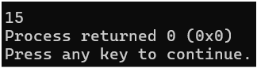
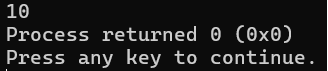

lección 12
funciones
Hasta este punto, hemos trabajado todo nuestro código dentro de la función main, dado que C++ la toma como punto de inicio. Sin embargo, podemos implementar nuevas funciones fuera de este alcance, y que podemos llamar a ejecutar, pasando datos llamados parámetros.
La estructura de una función es la siguiente:
//tipo nombre (parámetros) {cuerpo}
void queque(){
cout << “Quiero queque\n”;
}
//llamada a la funcion: queque();
Este ejemplo es una función void, es decir, no va a devolver un dato específico cuando sea llamada, sino que solamente ejecutará un conjunto de instrucciones. Podemos hacer que una función devuelva un dato, usando el comando return y pasándole datos iniciales como argumentos:
#include <iostream>
using namespace std;
//se declara la función según el tipo de dato que devuelva
//en este caso, int
int sumar(int n1, int n2){
return n1 + n2;
}
int main(){
int a = 5;
int b = 10;
//llamada a la funcion, pasando a y b como argumentos
cout << sumar(a, b);
return 0;
}

Alcance de variables
Las variables dentro de una función son accesibles únicamente para todo lo que esté dentro de dicha función, es decir, no se puede llamar una función externa y operar con variables que no le pertenecen, ya que no las conoce. Observa el ejemplo:
#include <iostream>
using namespace std;
void imprimir(){
cout << s;
}
int main(){
string s = "pantera";
imprimir(s);
return 0;
}
Este código no será válido, ya que la variable s está fuera del alcance de la función imprimir, la forma correcta es pasar s como argumento:
#include <iostream>
using namespace std;
void imprimir(string s){
cout << s;
}
int main(){
string s = "pantera";
imprimir(s);
return 0;
}
Cabe aclarar que no se trata del mismo string, sino que la función imprimir ha creado su propia variable string, y copiado el valor de la variable que se le pasa como argumento. Las variables fueron coloreadas para resaltar la diferencia. De cualquier forma, el parámetro string puede tener cualquier identificador, no necesariamente se debe llamar igual que la variable que se pasa.
Por fuera de todas las funciones, está el alcance global, esto es, declarar una variable fuera de las funciones al alcance de todas, generalmente en la parte de arriba:
#include <iostream>
using namespace std;
//variable global
string s = "alcance";
void imprimir(){
cout << s;
}
int main(){
cout << s;
imprimir();
return 0;
}
Ninguna de las funciones tiene parámetros ni declara variables, solo hay un string de alcance global, al que todas las funciones pueden acceder.
#include <iostream>
using namespace std;
//las referencias se escriben con &
void masUno(int& n){
n++;
}
int main(){
int a = 9;
masUno(a);
cout << a;
return 0;
}
